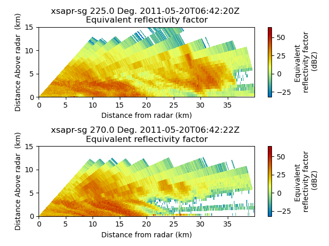

Note
Click here to download the full example code
Plot a cross section from a PPI volume¶
An example which extracts a cross section at two azimuth angles from a volume of PPI scans and plots both cross sections.
print(__doc__)
# Author: Jonathan J. Helmus (jhelmus@anl.gov)
# License: BSD 3 clause
import matplotlib.pyplot as plt
import pyart
from pyart.testing import get_test_data
filename = get_test_data('XSW110520105408.RAW7HHF')
radar = pyart.io.read(filename)
xsect = pyart.util.cross_section_ppi(radar, [45, 90])
display = pyart.graph.RadarDisplay(xsect)
fig = plt.figure()
ax = fig.add_subplot(211)
display.plot('reflectivity', 0, vmin=-32, vmax=64.)
ax = fig.add_subplot(212)
display.plot('reflectivity', 1, vmin=-32, vmax=64.)
plt.tight_layout()
plt.show()
Total running time of the script: ( 0 minutes 1.431 seconds)